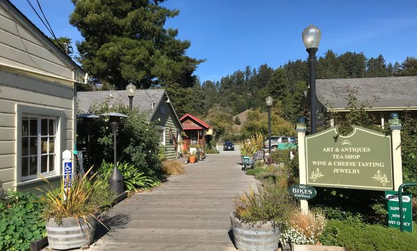
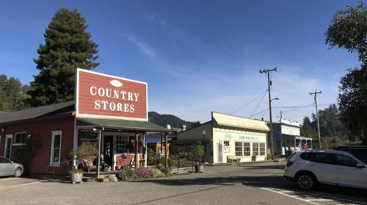
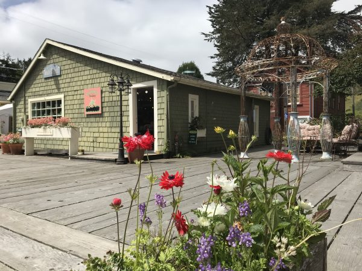
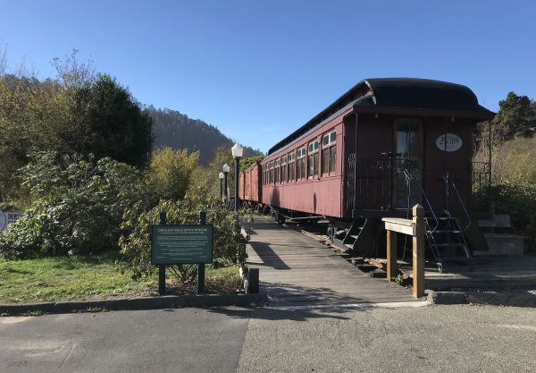
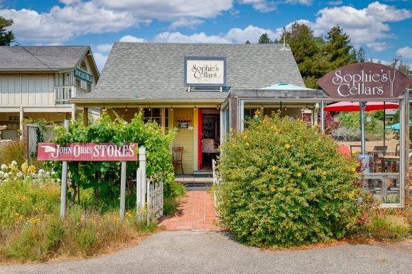
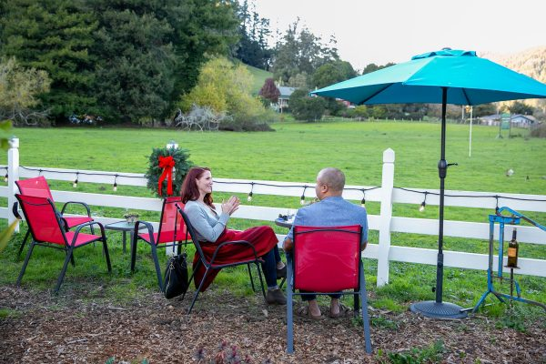
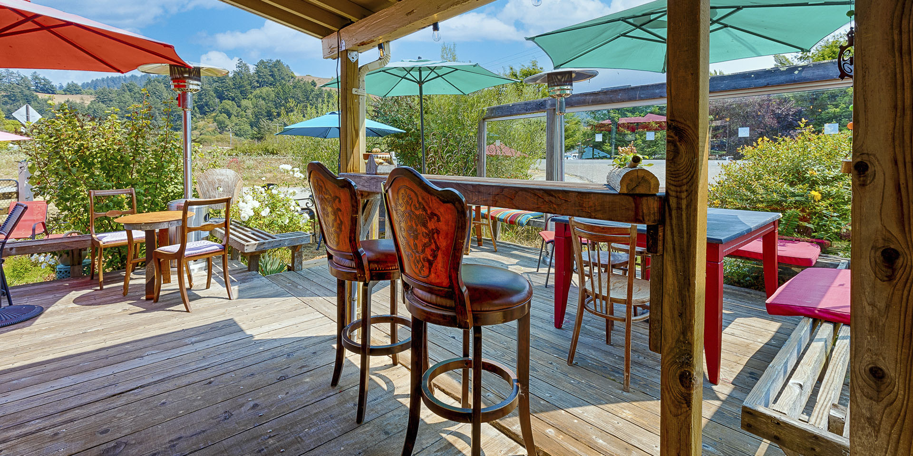
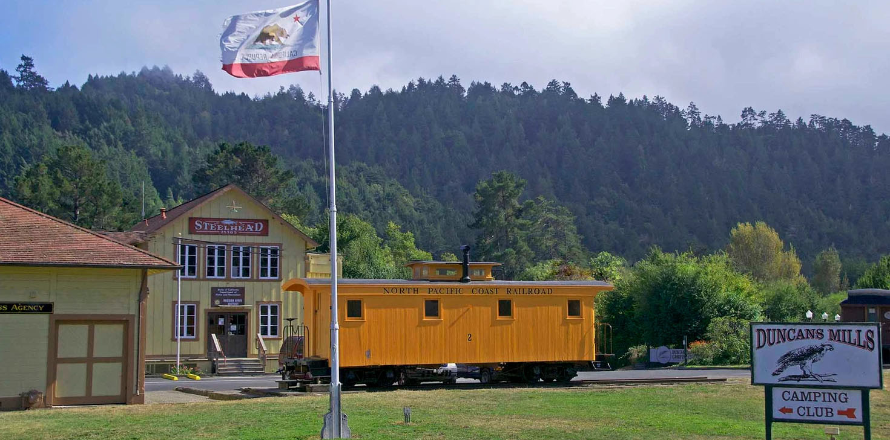
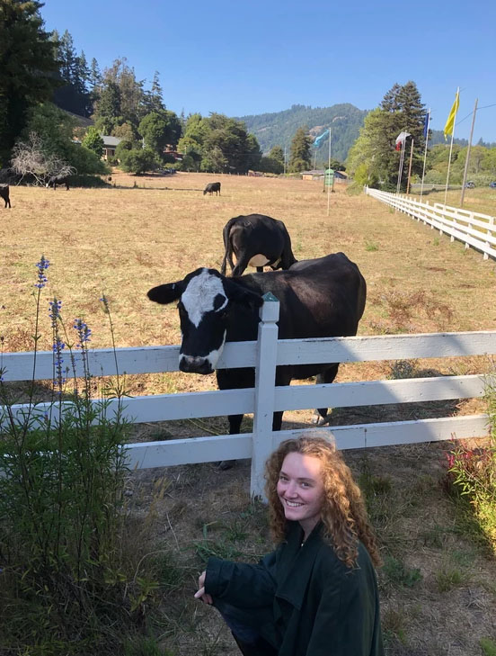
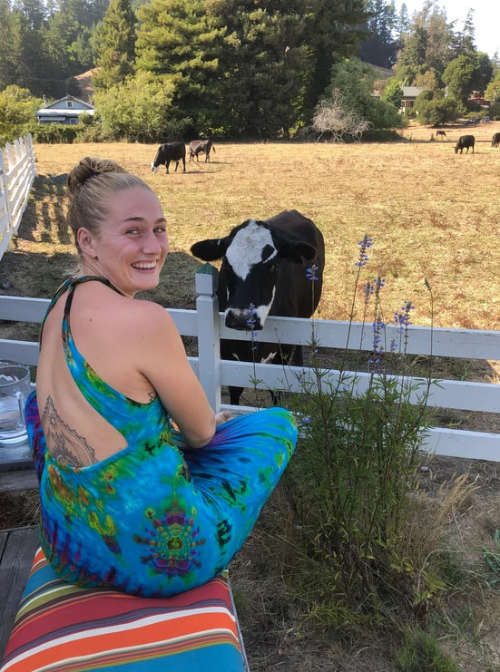

The Village
Local Shops, Wine Bar, Restaurants & More
A short walk down the driveway from Duncan House offers a chance to wander through the village of Duncans Mills with unique gift shops, exotic boutiques, antique stores, an art gallery, and wine bar.
Just across the highway you will find local legends like the The Blue Heron Bar and Gold Coast Coffee and Bakery as well as the historic train depot and museum.
For more information, visit the Duncans Mills official town website:
duncansmillsvillage.comView Gallery:
(Click any thumbnail)









